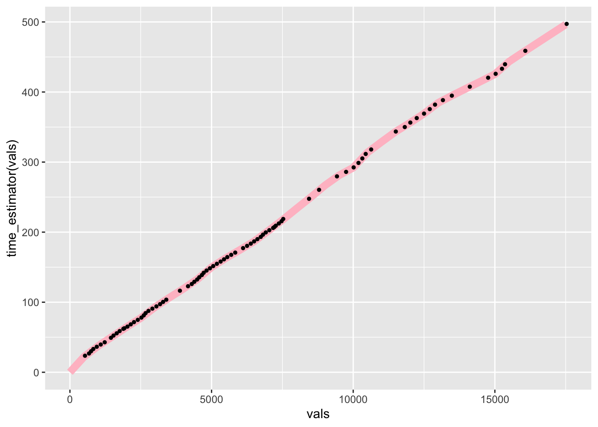

6 Interpolating Times Along the Route
Generating distances along the route, or “ghost” split points, gives us some basis for being able to make comparisons between cars. But we are still faced with a very particular problem: it’s unlikely that any two cars will generate telemetry sample points at the same location, which is to say, the same distance along the line.
In order to compare times at the same location, as we do with official split times, we need to generate some sort of model that lets us interpolate times along the route. This would then allow us compare times, albeit estimated ones, at the same location.
For more accuracy, this could should be done based on a speed model constructed from an analysis of route curvature.
One way of doing this is to generate an estimator function based on the time and distance data in the telemetry data frame.
# Estimate the time based on the distance into the route
# Add in an origin time at the stage of the stage
# If necessary, we could also add a crude acceleration effect
# model at the start of the stage
time_estimator = approxfun(c(0, route_telem_utm$dist),
c(0, route_telem_utm$roundeddelta_s))
# Estimate the distance based on the time into the route
distance_estimator = approxfun(route_telem_utm$roundeddelta_s,
route_telem_utm$dist)We can then use these estimator functions to estimate times at particular distances along the route, and vice versa.
For example, let’s create notional split points every 500 meters along the route, plotting both the predicted times and the actual times:
# Sample every 500m
vals = seq(to=max(route_telem_utm$dist), by=500)
ggplot() +
# Predicted line in pink
geom_line(aes(x=vals, y=time_estimator(vals)), size=3, colour='pink') +
# Sampled times in black
geom_point(data=route_telem_utm, aes(x=dist, y=roundeddelta_s),
color='black', size=1)
If we have multiple drivers, we can generate an interpolation function for each one. These models can then be used to predict driver times at notional split point locations (for example, every 200 meters or so). In this way, we can try to identify where drivers are gaining or losing time with respect to each other and start to build up stage maps showing how drivers compare with each other along the whole length of the stage.